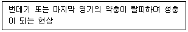
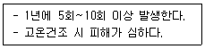
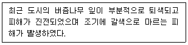

식물보호기사 (2020-08-22 기출문제)
1과목: 식물병리학
1. 사과나무 부란병에 대한 설명으로 옳지 않은 것은?
- 자낭포자와 병포자를 형성한다.
- 강한 전정 작업을 하지 말아야 한다.
- 사과나무 가지에 감염되면 사마귀가 형성된다.
- 병원균이 수피의 조직 내에 침입해 있어 방제가 어렵다.
(정답률: 78%)

2. 매개충에 의해 경란 전염하는 바이러스 병은?
- 담배 혹병
- 감자 더뎅이병
- 벼 줄무늬잎마름병
- 고구마 뿌리혹병
(정답률: 82%)
3. 다음 중 순활물기생체에 해당하는 것은?
- 보리 흰가루병균
- 감자 역병균
- 벼 깜부기병균
- 고구마 무름병균
(정답률: 72%)
4. 다음 중 복숭아나무 잎오갈병의 전형적인 병징은?
- 도장
- 천공
- 이상 비후
- 기공 계폐
(정답률: 68%)
5. 다음 중 세균의 그람염색반응을 결정하는 것으로 가장 옳은 것은?
- 편모의 유무
- 편모의 두께
- 펙틴의 물리적 구조
- 세포벽의 화학적 구조
(정답률: 79%)
6. 식물체에 암종을 형성하며, 유전공학 연구에 많이 쓰이는 식물병원 세균은?
- Brassica campestris var
- Agrobacterium tumefaciens
- Clavibacter michiganesis
- Xanthomonas campestris
(정답률: 88%)
7. 식물병 진단 중 해부학적 방법으로 가장 옳은 것은?
- 파지검출법
- 유출검사법
- 괴경지표법
- 즙액접종법
(정답률: 63%)
8. 다음 중 중간 기주인 향나무를 제거하면 피해를 경감시킬 수 있는 것은?
- 무 균핵병
- 사과나무 탄저병
- 사과나무 붉은별무늬병
- 복숭아 검은무늬병
(정답률: 91%)
9. 다음 중 크기가 가장 작은 식물 병원체는?
- 세균
- 진균
- 바이러스
- 바이로이드
(정답률: 91%)
10. 다음 중 병원균의 분생포자각과 자낭각이 보이는 것은?
- 오이 잘록병
- 밤나무 줄기마름병
- 수수 오갈병
- 보리 이삭누룩병
(정답률: 72%)
11. 다음 중 여름포자를 형성하지 않는 것은?
- 잣나무 털녹병균
- 소나무 혹병균
- 포플러 잎녹병균
- 향나무 녹병균
(정답률: 56%)
12. 다음 중 소나무 혹병균의 중간기주로 가장 거리가 먼 것은?
- 굴참나무
- 떡갈나무
- 굴피나무
- 상수리나무
(정답률: 70%)
13. 채소에 발생하는 흰가루병의 특징에 대한 설명으로 가장 거리가 먼 것은?
- 밀가루 모양의 흰색 포자를 잎 표면에 형성한다.
- 병 발생 후기에는 자낭각을 형성한다.
- 잎과 줄기를 시들게 만든다.
- 인공배양이 어렵다.
(정답률: 55%)
14. 파이토플라스마에 의해 발생되는 대추나무 빗자루병의 방제 시 수간주입에 사용되는 효과적인 약제는?
- 옥시테트라사이클린
- 디메토모르프
- 티아벤다졸
- 메틸브로마이드
(정답률: 85%)
15. 진딧물에 의해 바이러스가 전염되어 발생하는 병은?
- 땅콩 불마름병
- 보리 도열병
- 대추나무 빗자루병
- 배추 모자이크병
(정답률: 81%)
16. 다음 중 병원균이 이종기생균에 속하는 것은?
- 포도 새눈무늬병
- 호박 노균병
- 장미 탄저병
- 잣나무 털녹병
(정답률: 75%)
17. 뽕나무 오갈병의 병원체로 옳은 것은?
- 파이토플라스마
- 담자균
- 곰팡이
- 바이러스
(정답률: 85%)
18. 다음 중 섬모 또는 편모를 가지고 있으며, 운동성을 가지고 있는 것은?
- 유성포자
- 유주자
- 분생포자
- 난포자
(정답률: 73%)
19. 항균력이 있는 미생물을 이용하여 식물병을 방제하는 것은?
- 물리적 방제
- 경종적 방제
- 화학적 방제
- 생물적 방제
(정답률: 91%)
20. 다음 중 병원체가 주로 각피를 통해 직접 침입하지 않는 것은?
- 벼 도열병균
- 밤나무 줄기마름병균
- 사과나무 탄저병균
- 장미 잿빛곰팡이병균
(정답률: 55%)
2과목: 농림해충학
21. 곤충의 배설기관으로 척추동물의 신장과 같은 기능을 하는 것은?
- 말피기관
- 알라타체
- 사구체
- 전장
(정답률: 84%)
22. 곤충을 잡아먹는 포식성 곤충류로 가장 거리가 먼 것은?
- 무당벌레류
- 진딧물류
- 파리매류
- 사마귀류
(정답률: 75%)
23. 채소해충으로 가장 거리가 먼 것은?
- 이세리아깍지벌레
- 도둑나방
- 땅강아지
- 알톡톡이
(정답률: 49%)
24. 다음에서 설명하는 것은?

- 부화
- 용화
- 세대
- 우화
(정답률: 81%)
25. 다음에서 설명하는 해충은?

- 가루깍지벌레
- 점박이응애
- 밤나무혹벌
- 땅강아지
(정답률: 65%)
26. 누에 암나방이 발산하는 성 페르몬으로 가장 옳은 것은?
- 봄비콜
- 알로몬
- 카이로몬
- 글리세롤
(정답률: 64%)
27. 기피제를 놓아 해충을 방제하고자 할 때 곤충의 어떤 행동을 이용한 것인가?
- 음성주화성
- 양상주화성
- 양성주촉성
- 음성주촉성
(정답률: 68%)
28. 곤충 개체간의 통신수단에 사용되는 물질로 가장 관련이 없는 것은?
- allomone
- pheromone
- hormone
- kairomone
(정답률: 77%)
29. 성충은 뽕나무의 눈을 가해하고, 유충은 목질부에 구멍을 뚫고 먹어 들어가는 뽕나무 해충은?
- 뽕나무혹파리
- 뽕나무명나방
- 뽕나무깍지벌레
- 뽕나무애바구미
(정답률: 48%)
30. 다음 중 초본류 혹은 목본류의 줄기 속을 식해하여 가해하는 해충은?
- 콩풍뎅이
- 거세미나방
- 숯검은밤나방
- 박쥐나방
(정답률: 61%)
31. 다음에서 설명하는 해충으로 가장 옳은 것은?

- 깍지벌레류
- 진딧물류
- 방패벌레류
- 흰불나방
(정답률: 58%)
32. 성충으로 월동하는 해충은?
- 왕무당벌레붙이
- 혹명나방
- 검거세미나방
- 복숭아혹진딧물
(정답률: 44%)
33. 감자나방의 피해 특징으로 가장 거리가 먼 것은?
- 담배의 뿌리를 가해하고, 밖으로 배설물을 배출한다.
- 감자에 배설물이 나와 있다.
- 어린감자의 생장점을 파고 들어간다.
- 감자 잎의 표피를 뚫고 들어가 앞뒤 표피만 남긴다.
(정답률: 50%)
34. 다음 중 일본으로부터 천적을 수입하여 제주감귤원의 해충방제에 성공한 사례로서 기록된 해충으로 가장 옳은 것은?
- 가루깍지벌레
- 이세리아깍지벌레
- 화살깍지벌레
- 루비깍지벌레
(정답률: 58%)
35. 다음 중 곤충이 지구상에 번성하게 된 원인으로 가장 거리가 먼 것은?
- 외골격의 발달
- 날개의 발달
- 작은 몸의 크기
- 대부분 무변태 특성
(정답률: 83%)
36. 곤충의 분류 시 이용되는 기본 분류단위로 가장 옳은 것은?
- biotype(생태형)
- species(종)
- variety(변종)
- subspecies(아종)
(정답률: 84%)
37. 끝동매미충은 국내에서 연간 4세대를 경과하는데, 이 중 벼오갈병은 주로 몇 세대 약충이 매개하는가?
- 1세대
- 2세대
- 3세대
- 4세대
(정답률: 66%)
38. 다음 중 완전변태를 하는 곤충목은?
- 풀잠자리목
- 메뚜기목
- 노린재목
- 총채벌레목
(정답률: 74%)
39. 다음 중 체내 수분증산을 억제하는 표피층 구조로 가장 옳은 것은?
- 원표피층
- 외원표피층
- 외표피층
- 내원표피층
(정답률: 71%)
40. 식물체에 혹을 만들어 피해를 주는 해충으로 가장 거리가 먼 것은?
- 솔잎혹파리
- 밤나무혹벌
- 포도뿌리혹벌레
- 복숭아혹진딧물
(정답률: 57%)
3과목: 재배학원론
41. 작물 생육의 다량원소가 아닌 것은?
- K
- Mg
- Cu
- S
(정답률: 67%)
42. C3식물과 C4식물의 형태와 생리적 특성으로 옳은 것은?
- C4식물은 Kranz 구조가 있다.
- C3식물은 C4 보다 내건성이 강하다.
- C3식물의 CO2 보상점은 C4 보다 낮다.
- C4 식물의 광포화점은 C3 보다 낮다.
(정답률: 64%)
43. 다으 중 웅성불임성을 주로 이용하는 작물로만 나열된 것은?
- 무, 양배추
- 당근, 고추
- 배추, 브로콜리
- 순무, 가지
(정답률: 46%)
44. 찰벼에 메벼의 화분을 수분하면 그 F1 종자의 배유가 메벼의 형질을 보이는 현상은?
- Xenia
- Apomixis
- Pseudogamy
- Chimera
(정답률: 63%)
45. 벼의 추락현상이 발생할 때 벼뿌리를 상하게 하는 주된 물질은?
- 황화수소
- 탄산가스
- 불화수소
- 메탄가스
(정답률: 65%)
46. 저장 중 작물의 종자가 발아력을 상실하는 원인으로 가장 거리가 먼 것은?
- 원형질 단백의 응고
- 효소의 활력 저하
- 저장양분의 소모
- 유리지방산 감소
(정답률: 68%)
47. 맥류의 좌지현상을 볼 수 있는 경우는?
- 봄보리를 가을에 파종
- 봄보리를 봄에 파종
- 가을보리를 가을에 파종
- 가을보리를 봄에 파종
(정답률: 62%)
48. 다음 중 작물의 요수량이 가장 큰 것은?
- 수수
- 기장
- 호박
- 옥수수
(정답률: 69%)
49. 작물의 기원지를 알아내는 방법으로 가장 거리가 먼 것은?
- 식물지리학적 방법
- 계통분리법
- 유전자분석법
- 고고학적 방법
(정답률: 61%)
50. 광고 식물 생육과의 관계로 연결이 적절하지 않은 것은?
- 적색광 – 엽록소 형성
- 청색광 - 굴광현상
- 적외선 – 안토시안 생성
- 자외선 – 신장억제
(정답률: 60%)
51. 작물 품종의 잡종강세에 대한 설명으로 옳은 것은?
- 양친 식물보다 자식 식물의 생육이 약하다.
- 양친 식물보다 자식 식물의 생육이 왕성하다.
- 양친 식물과 자식 식물의 생육이 같다.
- 벼와 같은 작물에서 많이 발생한다.
(정답률: 80%)
52. 다음 중 기지의 문제가 가장 큰 것은?
- 앵두나무
- 포도나무
- 자두나무
- 살구나무
(정답률: 53%)
53. 작물 군락의 수광태세에 대한 일반적인 설명으로 옳은 것은?
- 벼의 분얼은 개산형(開散型)인 것이 좋다.
- 옥수수는 수이삭이 큰 것이 밀식에 잘 적응한다.
- 콩은 잎이 크고 넓은 것이 좋다.
- 벼의 잎은 넓고 상위엽이 수평인 것이 좋다.
(정답률: 61%)
54. 세포막 중 중간막의 주성분이며, 체내에서 이동이 어려운 것은?
- Mg
- P
- K
- Ca
(정답률: 56%)
55. 다음 중 산성토양에 대해 적응성이 가장 약한 것은?
- 아마
- 기장
- 팥
- 감자
(정답률: 55%)
56. 주로 영양번식 하는 식물은?
- 호프
- 아스파라거스
- 마늘
- 시금치
(정답률: 63%)
57. 지하에 정체하여 모관수의 근원이 되는 물은?
- 결합수
- 흡습수
- 지하수
- 중력수
(정답률: 73%)
58. 눈이나 가지의 바로 위에 가로로 깊은 칼금을 넣어 그 눈이나 가지의 발육을 조장하는 것은?
- 적아
- 적엽
- 환상박피
- 절상
(정답률: 62%)
59. 다음 중 작물의 복토 깊이가 가장 깊은 것은?
- 파
- 양파
- 유채
- 생강
(정답률: 71%)
60. 벼 품종의 특성에 대한 설명으로 옳은 것은?
- 묘대일수감응도가 높은 것이 만식적응성이 크다.
- 조기재배의 경우에는 만생종이 알맞다.
- 개량품종은 수확지수가 작다.
- 우리나라 만생종은 감광성이 크다.
(정답률: 60%)
4과목: 농약학
61. 다음 중 유기인계 살충제가 아닌 것은?
- MEP제
- PAP제
- DDVP제
- NAC제
(정답률: 60%)
62. 어떤 살충제에 대해여 이미 저항성이 발달한 해충이 한 번도 사용한 적은 없지만 작용기가 같은 살충제에 대하여 저항성을 나타내는 현상은?
- 교차저항성
- 복합저항성
- 단일약제저항성
- 선천적저항성
(정답률: 74%)
63. Dithiopyr 45% 유제 50mL(비중 1.0)를 1200배 액으로 희석하여 살포하려 할 때 소요되는 물의 양(L)은?
- 23.76
- 26.73
- 59.95
- 66.33
(정답률: 55%)
64. 훈증제 농약의 구비 조건으로 옳지 않은 것은?
- 기름이나 물에 잘 녹아야 한다.
- 휘발성이 커서 확산이 잘 되어야 한다.
- 훈증 목적물에 이화학적 변화를 일으키지 않아야 한다.
- 비인화성이어야 하고 침투성이 커야 한다.
(정답률: 72%)
65. 순도 95%인 클로로탈로닐 원제 20kg으로 75% 수화제를 만들려고 할 때, 필요한 보조제의 양(kg)은? (단, 비중은 농도와 관계없이 1로 동일하다.)
- 5.33
- 10.33
- 15.33
- 20.33
(정답률: 57%)
66. 20% phosmet 분제 3kg을 0.5%로 희석하는데 필요한 증량제의 양(kg)은? (단, 비중은 1이다.)
- 15
- 40
- 117
- 120
(정답률: 61%)
67. 증량제를 사용하여 분제의 가비중(假比重 ; bulk density)을 조절할 때 가장 적절한 가비중 범위는?
- 0.2 ~ 0.4
- 0.4 ~ 0.6
- 0.6 ~ 0.8
- 0.8 ~ 1.0
(정답률: 62%)
68. Phenol계 살균제로서 과수의 월동 방제용이나 목제방부제로도 사용될 수 있는 약제는?
- Carboxin + thiram
- Captan
- Neoasozin-6, 5
- Pentachlorophenol
(정답률: 55%)
69. 농약 원제의 효력을 증진시키기 위하여 사용되는 보조제에 해당되지 않는 것은?
- 증량제
- 유화제
- 살충제
- 협력제
(정답률: 79%)
70. 훈증제가 갖추어야 할 조건으로 틀린 것은?
- 휘발성이 크고 농도가 균일하여야 한다.
- 훈증할 목적물에 이화학적으로 변화를 주어야 한다.
- 비인화성이야 한다.
- 침투성이 커서 약제가 쉽게 도달하여야 한다.
(정답률: 72%)
71. 다음 중 살충력이 강하고, 적용범위가 넓으며 저렴한 값에 대량생산의 장점이 있으나 잔류독성의 문제를 일으킬 위험요인이 가장 큰 계통의 농약은?
- 유기황계
- 유기인계
- 유기염소계
- 카바메이트계
(정답률: 65%)
72. 제초제의 살초작용에 대한 설명으로 틀린 것은?
- 식물체의 제초제 흡수는 일반적으로 뿌리나 잎, 줄기를 통해 흡수된다.
- 잎을 통한 흡수는 극성과 무관하게 cellulose, pectin, wax의 순으로 흡수된다.
- 식물의 잎을 통한 흡수는 대부분 잎의 표면을 통해 이루어진다.
- 제초제의 식물체 내로의 침투정도는 제초제의 극성 정도에 따라 영향을 받는다.
(정답률: 75%)
73. 농약관리법령상 농약 및 원제의 신규등록의 경우 약효·약해 시험성적서의 인정범위로 옳은 것은?
- 180일간 시험한 성적서
- 1년간 시험한 성적서
- 2~3년간 시험한 성적서
- 4~5년간 시험한 성적서
(정답률: 59%)
74. 보호살균제의 특성에 대한 설명으로 옳지 않은 것은?
- 병균이 식물체에 침투하는 것을 막기 위해 쓰이는 약제이다.
- 포자의 발아저지 작용이 커야하고, 효과지속 기간도 길어야 한다.
- 부착성 및 고착성이 강하고 안정된 것이어야 한다.
- 살균력이 약하고 침투성이 었어야 한다.
(정답률: 77%)
75. 작물에 대한 약해 중 농약 사용방법과 관련해서 일어나는 약해가 아닌 것은?
- 불합리한 섞어 쓰기는 주성분의 가수분해, 금속염의 치환 등으로 약효저하 및 약해를 발생한다.
- 파라티오을 오랫동안 저장하면 p-nitrophenol이 생성되어 벼에 약해가 발생한다.
- 상자육묘에서 Rhizophos spp.에 의한 모마름병 방제를 위해 하이멕사졸과 클로로탈로닐을 동시 사용하면 약해가 발생한다.
- 살균제에 침투성 유화제를 첨가함으로써 식물체 내에 침투량이 많아져 약해가 일어난다.
(정답률: 50%)
76. 한때 식물생장억제제인 낙과방지제로 사용했으나 발암물질로 지정되어 화훼농업에서 신장억제제로 주로 사용하는 것은?
- Pyrimethanil
- β-indole acetic acid
- Colchicine
- Daminozide
(정답률: 44%)
77. 농약중독 사고 발생 시 취해야 할 응급조치로 적당하지 않은 것은?
- 경구 중독일 경우 따뜻한 물이나 소금물로 세척한다.
- 약물이 장내로 들어갈 염려가 있을 시 황산마그네슘(15~20g) 물에 독극물의 흡착을 위해 활성탄이나 규조토 등을 타서 먹여 배설시킨다.
- 흡입 중독일 경우 체온을 식히기 위하여 찬물로 씻어 준다.
- 경피 중독일 경우 오염된 의복을 벗기고 부착된 약제를 비누물로 씻는다.
(정답률: 68%)
78. 물에 녹지 않은 원제를 벤토나이트·고령토 같은 점토광물의 증량제와 혼합하고, 여기에 친수성·습전성 및 고착성 등을 부가시키기 위하여 적당한 계면활성제를 가하여 미분말화시킨 농약의 제형은?
- 수용제
- 수화제
- 분제
- 유제
(정답률: 66%)
79. 농약의 토양 잔류에 대한 설명으로 옳지 않은 것은?
- 유기염소계 농약은 환경에서 매우 안정하므로 토양 중에 오래 잔류한다.
- 아닐린유도제는 토양 중에서 토양입자에 강하게 흡착되므로 오래 잔류한다.
- 수화제나 유제와 같이 물에 희석해서 사용된 약제는 분제나 입제보다 토양에서 분해가 빨라진다.
- 일반적으로 유기물함량이 높은 토양에서 농약의 분해가 촉진된다.
(정답률: 43%)
80. 농약의 구비조건으로 가장 거리가 먼 것은?
- 독성이 강할 것
- 약해가 없을 것
- 약효가 확실할 것
- 저장상이 좋을 것
(정답률: 82%)
5과목: 잡초방제학
81. 잡초경합 한계기간에 대한 설명으로 옳지 않은 것은?
- 철저한 잡초 방제가 요구되는 시기이다.
- 작물 생육기의 초기 1/4 ~ 1/3 정도의 기간이다.
- 잡초와 작물이 경합하지만 작물의 피해가 없는 한계기간이다.
- 한계기간 이후에는 잡초 방제를 더 하여도 작물 피해에 큰 변화가 없다.
(정답률: 60%)
82. 다음 중 영양번식기관과 해당 잡초의 연결이 틀린 것은?
- 지하경 – 가래, 수염가래꽃
- 인경 – 야생마늘, 자주괭이밥
- 괴경 – 향부자, 매자기
- 포복경 – 올미, 벗풀
(정답률: 52%)
83. 다음 중 액제에 해당하지 않는 것은?
- 수성현탁제
- 과립수용제
- 미탁제
- 세립제
(정답률: 67%)
84. 다음 중 기주식물에 기생하는 잡초는?
- 새삼
- 피
- 명아주
- 물달개비
(정답률: 66%)
85. 다음 중 주로 괴경으로 번식하는 논잡초는?
- 올방개
- 알방동사니
- 가막사리
- 자귀풀
(정답률: 62%)
86. 작물과 잡초의 주요 3대 경합 요소에 포함되지 않는 것은?
- 수분
- 토양구조
- 영양분
- 빛
(정답률: 77%)
87. 다음 중 선택성 제초제는?
- Paraquat
- Glyphosate
- Glufosinate
- 2,4-D
(정답률: 71%)
88. 다음 중 논 잡초로만 나열된 것은?
- 흰명아주, 어저귀
- 쇠비름, 개비름
- 개구리밥, 생이가래
- 망초, 까마중
(정답률: 67%)
89. 다음 중 잡초종합방제체계 수립을 위한 선형특성적 모형에서 시작부터 완성단계로의 순서로 가장 옳은 것은?
- 모형의 평가 및 수정 → 문제유형의 검토 → 잡초군락의 예찰 → 제초방법의 선정 → 방제체계의 적용
- 문제유형의 검토 → 잡초군락의 예찰 → 제초방법의 선정 → 방제체계의 적용 → 모형의 평가 및 수정
- 잡초군락의 예찰 → 문제유형의 검토 → 방제체계의 적용 → 모형의 평가 및 수정 → 제초방법의 선정
- 제초방법의 선정 → 잡초군락의 예찰 → 방제체계의 적용 → 문제유형의 검토 → 모형의 평가 및 수정
(정답률: 60%)
90. 다음 중 일년생 잡초로만 나열된 것이 아닌 것은?
- 여뀌, 어저귀
- 개비름, 닭의장풀
- 쇠뜨기, 조뱅이
- 강아지풀, 쇠비름
(정답률: 37%)
91. 작물이 심겨져 있지 않은 비농경지에서 발생하는 잡초를 방제하는데 가장 효과적인 제초제는?
- 시마진 수화제
- 뷰타클로로 유제
- Glyphosate
- 2,4-D
(정답률: 57%)
92. 콩밭의 바랭이를 효율적으로 방제하는 방법으로 가장 거리가 먼 것은?
- 멀칭재배를 한다.
- 콩의 파종밀도를 조밀하게 한다.
- 광엽잡초방제용 경엽처리 제초제를 처리한다.
- 경합한계기간 이전에 제초한다.
(정답률: 53%)
93. 잡초의 발아와 토양환경의 관계에 대한 설명으로 옳지 않은 것은?
- 잡초의 출현시기를 지배하는 요인으로서 최적온도는 대체로 발아적온과 일치한다.
- 토양의 수분은 토양경도와 산소함량에 영향을 준다.
- 건생잡초는 습생잡초보다 발아에 필요한 산소요구량이 높다.
- 잡초의 발생심도는 중점토가 사질토보다 깊다.
(정답률: 64%)
94. 제초제의 흡수에 대한 설명으로 가장 거리가 먼 것은?
- 비극성제초제는 극성 제초제보다 잡초의 뿌리흡수가 용이하다.
- 제초제의 식물뿌리 내 물관으로의 이동 중 원형질막을 통과하는 경로는 심플라스트 경로를 이용한다.
- 종자 내로 제초제의 침투는 집단류와 확산에 의해 일어난다.
- 식물의 뿌리는 토양으로부터 토양에 잔류하는 제초제를 흡수한다.
(정답률: 58%)
95. 잡초 잎의 구성성분 중 비극성정도가 가장 높은 것은?
- 큐틴
- 큐티클납질
- 펙틴
- 셀룰로오스
(정답률: 54%)
96. 다음 중 암발아성 잡초인 것은?
- 별꽃
- 개비름
- 왕바랭이
- 쇠비름
(정답률: 71%)
97. 다음 중 잡초경합 한계기간이 가장 긴 작물은?
- 양파
- 녹두
- 밭벼
- 콩
(정답률: 53%)
98. 못자리용 제초제인 벤타존의 작용성과 사용방법에 대한 설명으로 가장 거리가 먼 것은?
- 올방개 등과 같은 방동사니와 잡초의 살초효과가 뚜렷하다.
- 광합성 저해작용을 한다.
- 경엽처리용 벼 생육 중기 제초제이다.
- 화본과 잡초를 효과적으로 방제할 수 있다.
(정답률: 46%)
99. 잡초를 형태학적으로 분류할 때 관계없는 것은?
- 광엽 잡초
- 로제트형 잡초
- 화본과 잡초
- 방동사니과 잡초
(정답률: 73%)
100. 다음 중 산아마이드계 제초제가 아닌 것은?
- Alachlor
- Dicamba
- Propanil
- Napropamide
(정답률: 51%)